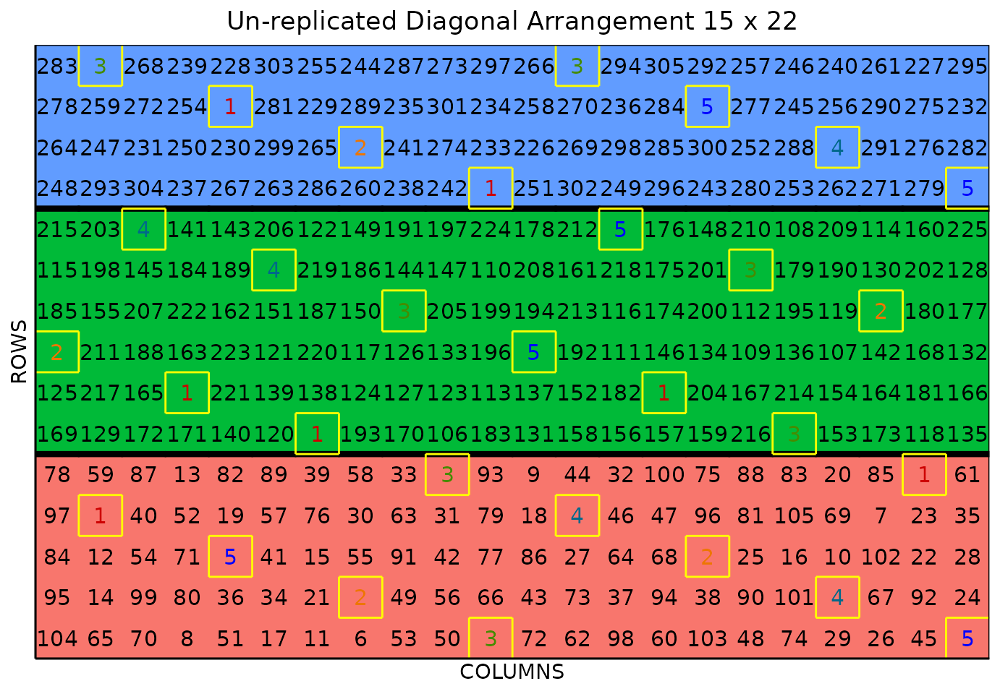

Unreplicated Diagonal Arrangement Design
Source:vignettes/diagonal_arrangement.Rmd
diagonal_arrangement.RmdSingle Unreplicated Diagonal Arrangement Design
This vignette shows how to generate single and multiple
unreplicated diagonal arrangement designs using both the
FielDHub Shiny App and the scripting function
diagonal_arrangement() from the FielDHub R
package.
Overview
In some experiments, there is insufficient seed quantity or field space to conduct trials with large numbers of genotypes, so plant breeders must use unreplicated or partially replicated experimental designs, like unreplicated designs with checks allocated in a systematic diagonal distribution(Clarke and Stefanova 2011). In some cases, the experiment is split into blocks of specified size. This allows breeders to design a field that contains multiple different experiments, for example, plants at various stages of maturity.
FielDHub includes a function to run such experimental designs, as well as tabs for single and multiple diagonal arrangement on the FielDHub app.
Use Case
Suppose a plant breeding project needs to identify superior entries of barley. In this project, a preliminary yield trial (PYT) is carried out with 300 genotypes tested in one experiment and over one location by an unreplicated design. The experiment is lying in a field containing 15 rows and 22 columns of plots. In addition, 5 checks are included in a systematic diagonal arrangement across the field to fill 30 plots representing 9.1% of the total number of experimental plots.
1. Using the FielDHub Shiny App
Once the app is running, go to Unreplicated Designs > Single Diagonal Arrangement
Then, follow the following steps where we will show how to generate a single unreplicated diagonal arrangement design.
Inputs
-
Import entries’ list? Choose whether to import a
list with entry numbers and names for genotypes or treatments.
If the selection is
No, that means the app is going to generate synthetic data for entries and names of the treatment/genotypes based on the user inputs.If the selection is
Yes, the entries list must fulfill a specific format and must be a.csvfile. The file must have the columnsENTRYandNAME. TheENTRYcolumn must have a unique integer number entry for each treatment/genotype. The columnNAMEmust have a unique name that identifies each treatment/genotype. Both ENTRY and NAME must be unique, duplicates are not allowed. In the following table, we show an example of the entries list format. This example has an entry list with 4 checks and 8 treatments/genotypes. It is crucial to allocate the checks in the top part of the file.
| ENTRY | NAME |
|---|---|
| 1 | CH1 |
| 2 | CH2 |
| 3 | CH3 |
| 4 | CH4 |
| 5 | ND-5 |
| 6 | ND-6 |
| 7 | ND-7 |
| 8 | ND-8 |
| 9 | ND-9 |
| 10 | ND-10 |
| 11 | ND-11 |
| 12 | ND-12 |
Enter the number of entries/treatments in the Input # of Entries box, which is 300 in our case.
Select 5 from the drop-down on the Input # of Checks box.
Since we want to run this experiment over 1 location, set Input # of Locations to 1.
Select
serpentineorcartesianin the Plot Order Layout. For this example we will use theserpentinelayout.To ensure that randomizations are consistent across sessions, we can set a random seed in the box labeled random seed. For instance, we will set it to
16.Enter the name for the experiment in the Input Experiment Name box. For example,
PYT_BARLEY_2022.Enter the starting plot number in the Starting Plot Number box. In this experiment we want the plot start at
1001.Enter the name of the site/location in the Input the Location box. For this experiment we will set the site as
FARGO. In the case of users will run the experiment in multiple locations, the name for each location must be enter separate by comma, for example:FARGO, CASSELTON, MINOT.Once we have entered all the information for our experiment on the left side panel, click the Run! button to run the design.
You will then be prompted to select the dimensions of the field from the list of options in the drop-down in the middle of the screen with the box labeled Select dimensions of field. In our case, we will select
15 x 22.Click the Randomize! button to randomize the experiment with the set field dimensions and to see the output plots.
If you change any of the inputs on the left side panel after running an experiment initially, you have to click the Run and Randomize buttons again, to re-run with the new inputs.
Outputs
After you run a single diagonal arrangement in FielDHub and set the dimensions of the field, there are several ways to display the information contained in the field book. The first tab, Expt Design Info, shows the option to change the dimensions of the field and re-randomize, as well as a reference guide for experiment design.
Input Data
On the second tab, Input Data, you can see all the entries in the randomization in a list that was generated with the inputs, as well as a table of the checks with the number of times they appear in the field.
Randomized Field
The Randomized Field tab displays a graphical representation of the randomization of the entries in a field of the specified dimensions. The checks are each colored uniquely, showing the number of times they are distributed throughout the field. The display includes numbered labels for the rows and columns. You can copy the field as a table or save it directly as an Excel file with the Copy and Excel buttons at the top.
In the Choose % of Checks: drop-down box, users can play with different options for the total amount of checks in the field.
Plot Number Field
On the Plot Number Field tab, there is a table display of the field with the plots numbered according to the Plot Order Layout specified, either serpentine or cartesian. You can see the corresponding entries for each plot number in the field book. Like the Randomized Field tab, you can copy the table or save it as an Excel file with the Copy and Excel buttons.
Field Book
The Field Book displays all the information on the experimental design in a table format. It contains the specific plot number and the row and column address of each entry, as well as the corresponding treatment on that plot. This table is searchable, and we can filter the data in relevant columns.
2. Using the FielDHub function:
diagonal_arrangement()
You can run the same design with a function in the FielDHub package,
diagonal_arrangement().
First, you need to load the FielDHub package typing,
Then, you can enter the information describing the above design like this:
single_diag <- diagonal_arrangement(
nrows = 15,
ncols = 22,
lines = 300,
checks = 5,
l = 1,
plotNumber = 1,
exptName = "PYT_BARLEY_2022",
locationNames = "FARGO",
seed = 16,
)Details on the inputs entered in diagonal_arrangement()
above:
-
nrows = 15is the number of columns in the field. -
ncols = 22is the number of rows in the field. -
lines = 300is the number of genotypes. -
checks = 5is the number of checks. -
l = 1is the number of locations. -
plotNumber = 1is the starting plot number. -
exptName = "PYT_BARLEY_2022"optional name for the experiment -
locationNames = "FARGO"optional name for each location. -
seed = 16is the random seed to replicate identical randomizations.
Print single_diag object
To print a summary of the information that is in the object
single_diag, we can use the generic function
print().
print(single_diag)Un-replicated Diagonal Arrangement Design
Information on the design parameters:
List of 11
$ rows : num 15
$ columns : num 22
$ treatments : int 300
$ checks : int 5
$ entry_checks :List of 1
..$ : int [1:5] 1 2 3 4 5
$ rep_checks :List of 1
..$ : num [1:5] 6 6 6 6 6
$ locations : num 1
$ planter : chr "serpentine"
$ percent_checks: chr "9.1%"
$ fillers : num 0
$ seed : num 16
10 First observations of the data frame with the diagonal_arrangement field book:
ID EXPT LOCATION YEAR PLOT ROW COLUMN CHECKS ENTRY TREATMENT
1 1 PYT_BARLEY_2022 FARGO 2024 1 1 1 0 152 Gen-152
2 2 PYT_BARLEY_2022 FARGO 2024 2 1 2 0 38 Gen-38
3 3 PYT_BARLEY_2022 FARGO 2024 3 1 3 0 285 Gen-285
4 4 PYT_BARLEY_2022 FARGO 2024 4 1 4 0 226 Gen-226
5 5 PYT_BARLEY_2022 FARGO 2024 5 1 5 0 215 Gen-215
6 6 PYT_BARLEY_2022 FARGO 2024 6 1 6 0 272 Gen-272
7 7 PYT_BARLEY_2022 FARGO 2024 7 1 7 0 91 Gen-91
8 8 PYT_BARLEY_2022 FARGO 2024 8 1 8 0 126 Gen-126
9 9 PYT_BARLEY_2022 FARGO 2024 9 1 9 0 289 Gen-289
10 10 PYT_BARLEY_2022 FARGO 2024 10 1 10 0 248 Gen-248Access to single_diag object
The function diagonal_arrangement() returns a list
consisting of all the information displayed in the output tabs in the
FielDHub app: design information, plot layout, plot numbering, entries
list, and field book. These are accessible by the $
operator, i.e. single_diag$layoutRandom or
single_diag$fieldBook.
single_diag$fieldBook is a data frame containing
information about every plot in the field, with information about the
location of the plot and the treatment in each plot. As seen in the
output below, the field book has columns for ID,
EXPT, LOCATION, YEAR,
PLOT, ROW, COLUMN,
CHECKS, ENTRY, and TREATMENT.
Let us see the first 10 rows of the field book for this experiment.
field_book <- single_diag$fieldBook
head(field_book, 10) ID EXPT LOCATION YEAR PLOT ROW COLUMN CHECKS ENTRY TREATMENT
1 1 PYT_BARLEY_2022 FARGO 2024 1 1 1 0 152 Gen-152
2 2 PYT_BARLEY_2022 FARGO 2024 2 1 2 0 38 Gen-38
3 3 PYT_BARLEY_2022 FARGO 2024 3 1 3 0 285 Gen-285
4 4 PYT_BARLEY_2022 FARGO 2024 4 1 4 0 226 Gen-226
5 5 PYT_BARLEY_2022 FARGO 2024 5 1 5 0 215 Gen-215
6 6 PYT_BARLEY_2022 FARGO 2024 6 1 6 0 272 Gen-272
7 7 PYT_BARLEY_2022 FARGO 2024 7 1 7 0 91 Gen-91
8 8 PYT_BARLEY_2022 FARGO 2024 8 1 8 0 126 Gen-126
9 9 PYT_BARLEY_2022 FARGO 2024 9 1 9 0 289 Gen-289
10 10 PYT_BARLEY_2022 FARGO 2024 10 1 10 0 248 Gen-248Plot field layout
For plotting the layout in function of the coordinates
ROW and COLUMN in the field book object we can
use the generic function plot() as follow,
plot(single_diag)The figure above shows a map of an experiment randomized as a single unreplicated diagonal arrangement design. Gray plots represent the unreplicated treatments, while distinctively colored check plots are replicated throughout the field in a systematic diagonal arrangement.
Multiple Unreplicated Diagonal Arrangement Design
Now, we show how to generate the same kind of unreplicated design with multiple experiments in the same field.
Use Case
A plant breeding project needs to test 300 genotypes divided among three different experiments in amounts of 100, 120, and 80 respectively. Each experiment represents different stages of maturity. The 3 experiments are lying in a field containing 15 rows and 22 columns of plots. In addition, 5 checks are included in a systematic diagonal arrangement across experiments to fill 30 plots representing 9.1% of the total number of experimental plots.
FielDHub can perform the randomization for the design in
the problem explained above. This can be solved either through the app
or the diagonal_arrangement() function.
1. Using the FielDHub Shiny App
To generate a multiple unreplicated diagonal arrangement design using the FielDHub app:
First, go to Unreplicated Designs > Multiple Diagonal Arrangement
Then, follow the following steps where we will show how to generate this kind of design.
Inputs
-
Import entries’ list? Choose whether to import a
list with entry numbers and names for genotypes or treatments.
If the selection is
No, that means the app is going to generate synthetic data for entries and names of the treatment/genotypes based on the user inputs.If the selection is
Yes, the entries list must fulfill a specific format and must be a.csvfile. The file must have the columnsENTRYandNAME. TheENTRYcolumn must have a unique entry integer number for each treatment/genotype. The columnNAMEmust have a unique name that identifies each treatment/genotype. Both ENTRY and NAME must be unique, duplicates are not allowed. In the following table, we show an example of the entries list format. This example has an entry list with four checks and 8 treatments/genotypes. It is crucial to allocate the checks in the top part of the file.Note: If you wish to create multiple blocks of different sizes from an imported entries list, for example, a block of size 80, 90, and 100 plots, FielDHub will read the imported entries list as checks, then the 80 entries for the first block, then the 90 entries for the second block, then the 100 entries for the last block.
| ENTRY | NAME |
|---|---|
| 1 | CH1 |
| 2 | CH2 |
| 3 | CH3 |
| 4 | CH4 |
| 5 | ND-5 |
| 6 | ND-6 |
| 7 | ND-7 |
| 8 | ND-8 |
| 9 | ND-9 |
| 10 | ND-10 |
| 11 | ND-11 |
| 12 | ND-12 |
Select the checkbox option Use the same entries across experiments if the purpose is to make replications instead of testing different experiments. Checking this option requires the same size for all blocks. For example, testing 100 treatments across 3 blocks require to set
300in Input # of Entries and100, 100, 100as input in Input # Entries per Expt. In our case we will keep unchecked this option.Enter the total number of entries/treatments in the Input # of Entries box, which is
300in our case.Enter the number of entries/treatments by experiment separate by comma in the Input # Entries per Expt box, which are
100, 120, 80in our case.Select 5 from the drop-down on the Input # of Checks box.
Since we want to run this experiment over 1 location, set Input # of Locations to
1.Select
By RoworBy Columnin the Blocks Layout:. For this example we will set theBy Rowexperiments/blocks layout.Select
serpentineorcartesianin the Plot Order Layout. For this example we will set theserpentinelayout.Enter the starting plot number for each experiment in the Starting Plot Number box. In this experiment we want the plot start at
1, 1001, 2001for each experiment. The app also allows setting only one number for all experiments. For example, the plot number could start at10.Enter the name for each experiment in the Input Experiment Name box. For example,
MATURITY1, MATURITY2, MATURITY3.To ensure that randomization are consistent across sessions, we can set a random seed in the box labeled random seed. For instance, we will set it to
17.Enter the name of the site/location in the Input the Location box. For this experiment we will set the site as
FARGO. In the case of users will run the experiment in multiple locations, the name for each location must be enter separate by comma, for example:FARGO, CASSELTON, MINOT.Once we have entered all the information for our experiment on the left side panel, click the Run! button to run the design.
You will then be prompted to select the dimensions of the field from the list of options in the drop-down in the middle of the screen with the box labeled Select dimensions of field. In our case, we will select
15 x 22.Click the Randomize! button to randomize the experiment with the set field dimensions and to see the output plots.
If you change any of the inputs on the left side panel after running an experiment initially, you have to click the Run and Randomize buttons again, to re-run with the new inputs.
Outputs
After you run a single diagonal arrangement in FielDHub and set the dimensions of the field, there are several ways to display the information contained in the field book. The first tab, Expt Design Info, shows the option to change the dimensions of the field and re-randomize, as well as a reference guide for experiment design.
Input Data
On the second tab, Input Data, you can see all the entries in the randomization in a list that was generated with the inputs, as well as a table of the checks with the number of times they appear in the field.
Randomized Field
The Randomized Field tab displays a graphical representation of the randomization of the entries in a field of the specified dimensions. The checks are all colored uniquely, showing the number of times they are distributed throughout the field. The display includes numbered labels for the rows and columns. You can copy the field as a table or save it directly as an Excel file with the Copy and Excel buttons at the top.
In this tab by the Choose % of Checks: box users can play with different options for the total amount of checks in the field.
Plot Number Field
On the Plot Number Field tab, there is a table display of the field with the plots numbered according to the Plot Order Layout specified, either serpentine or cartesian. You can see the corresponding entries for each plot number in the field book. Like the Randomized field tab, you can copy the table or save it as an Excel file with the Copy and Excel buttons.
Field Book
The Field Book displays all the information on the experimental design in a table format. It contains the specific plot number and the row and column address of each entry, as well as the corresponding treatment on that plot. This table is searchable, and we can filter the data in relevant columns.
2. Using the FielDHub function:
diagonal_arrangement()
A variation on the single diagonal arrangement included in the
diagonal_arrangement() function is the multiple diagonal
arrangement, where the experiment is split into blocks of specified
size.
multi_diag <- diagonal_arrangement(
nrows = 15,
ncols = 22,
lines = 300,
kindExpt = "DBUDC",
blocks = c(100,120,80),
checks = 5,
l = 1,
plotNumber = c(1, 1001, 2001),
exptName = c("MATURITY1", "MATURITY2", "MATURITY3"),
locationNames = "FARGO",
seed = 17
)Details on the inputs entered in diagonal_arrangement()
above:
The description for the inputs that we used to generate the design,
-
nrows = 15is the number of columns in the field. -
ncols = 22is the number of rows in the field. -
lines = 300is the number of genotypes. -
kindExpt = "DBUDC"is an option to randomize multiple experiments -
blocks = c(100,120,80)are the blocks in multiple arrangement. -
checks = 5is the number of checks. -
l = 1is the number of locations. -
plotNumber = c(1, 1001, 2001)is the starting plot number for each experiment. It could be just one number as well. -
exptName = c("MATURITY1", "MATURITY2", "MATURITY3")is an optional name for each experiment. -
locationNames = "FARGO"optional name for each location. -
seed = 17is the random seed to replicate identical randomizations.
Print multi_diag object
For printing a summary of the information that is in the object
multi_diag we can use the generic function
print()
print(multi_diag)Un-replicated Diagonal Arrangement Design
Information on the design parameters:
List of 11
$ rows : num 15
$ columns : num 22
$ treatments : num [1:3] 100 120 80
$ checks : int 5
$ entry_checks :List of 1
..$ : int [1:5] 1 2 3 4 5
$ rep_checks :List of 1
..$ : num [1:5] 7 5 7 5 6
$ locations : num 1
$ planter : chr "serpentine"
$ percent_checks: chr "9.1%"
$ fillers : num 0
$ seed : num 17
10 First observations of the data frame with the diagonal_arrangement field book:
ID EXPT LOCATION YEAR PLOT ROW COLUMN CHECKS ENTRY TREATMENT
1 1 MATURITY1 FARGO 2024 1 1 1 0 104 Gen-104
2 2 MATURITY1 FARGO 2024 2 1 2 0 65 Gen-65
3 3 MATURITY1 FARGO 2024 3 1 3 0 70 Gen-70
4 4 MATURITY1 FARGO 2024 4 1 4 0 8 Gen-8
5 5 MATURITY1 FARGO 2024 5 1 5 0 51 Gen-51
6 6 MATURITY1 FARGO 2024 6 1 6 0 17 Gen-17
7 7 MATURITY1 FARGO 2024 7 1 7 0 11 Gen-11
8 8 MATURITY1 FARGO 2024 8 1 8 0 6 Gen-6
9 9 MATURITY1 FARGO 2024 9 1 9 0 53 Gen-53
10 10 MATURITY1 FARGO 2024 10 1 10 0 50 Gen-50Access to multi_diag object
The function diagonal_arrangement() returns a list
consisting of all the information displayed in the output tabs in the
FielDHub app: design information, plot layout, plot numbering, entries
list, and field book. These are accessible by the $
operator, i.e. multi_diag$layoutRandom or
multi_diag$fieldBook.
multi_diag$fieldBook is a data frame containing
information about every plot in the field, with information about the
location of the plot and the treatment in each plot. As seen in the
output below, the field book has columns for ID,
EXPT, LOCATION, YEAR,
PLOT, ROW, COLUMN,
CHECKS, ENTRY, and TREATMENT.
Let us see the first 10 rows of the field book for this experiment.
field_book <- multi_diag$fieldBook
head(field_book, 10) ID EXPT LOCATION YEAR PLOT ROW COLUMN CHECKS ENTRY TREATMENT
1 1 MATURITY1 FARGO 2024 1 1 1 0 104 Gen-104
2 2 MATURITY1 FARGO 2024 2 1 2 0 65 Gen-65
3 3 MATURITY1 FARGO 2024 3 1 3 0 70 Gen-70
4 4 MATURITY1 FARGO 2024 4 1 4 0 8 Gen-8
5 5 MATURITY1 FARGO 2024 5 1 5 0 51 Gen-51
6 6 MATURITY1 FARGO 2024 6 1 6 0 17 Gen-17
7 7 MATURITY1 FARGO 2024 7 1 7 0 11 Gen-11
8 8 MATURITY1 FARGO 2024 8 1 8 0 6 Gen-6
9 9 MATURITY1 FARGO 2024 9 1 9 0 53 Gen-53
10 10 MATURITY1 FARGO 2024 10 1 10 0 50 Gen-50Plot field layout
For plotting the layout in function of the coordinates
ROW and COLUMN in the field book object we can
use the generic function plot() as follow,
plot(multi_diag)
The figure above shows a map of an experiment randomized as a multiple unreplicated diagonal arrangement design. Gray, salmon, and pink shade the blocks of unreplicated experiments, while distinctively colored check plots are replicated throughout the field in a systematic diagonal arrangement.